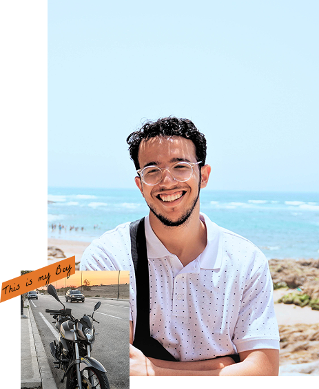

The person behind the pixels and the products.
Hey, I'm Zakariae, a Product Designer with 4+ years of experience bringing digital ideas to life. I've worked on everything from SaaS platforms to automotive interfaces, and I enjoy figuring out how to make things work better, feel simpler, and look great. I'm naturally curious, detail oriented, and always looking for new ways to learn, experiment, and grow through design.

What guides my work
And the best ideas always come in the shower.
My four-step creative process
I explore the problem, understand user needs, and gather insights before jumping into solutions.
I identify the key challenges, prioritize what matters, and align user needs with business goals.
I explore different ideas, sketch solutions, and map user flows to find the right direction.
I turn ideas into interfaces and prototypes, refine the details, and work with developers to bring them to life.
The tool follows the job.
I don't believe in using tools just because they're popular. I choose what fits the problem, the team, and the outcome we're trying to achieve.
Design with: Figma is my daily driver, alongside Adobe Creative Suite for visual design, Premiere Pro and Sony Vegas for video editing, and AI tools to explore ideas, speed up workflows, and experiment with new creative possibilities.
Methods: I rely on user-centered design, research, user flows, usability testing, and iteration to solve real problems and make products easier to use.
Build with: I use Framer to create interactive websites, WordPress and other CMS platforms to build manageable web experiences, and HTML, CSS, and JavaScript to bridge the gap between design and development.
Leave out: Unnecessary complexity, design for the sake of trends, and features without a clear purpose. I believe good design should be simple, useful, and intentional.
People I've worked with
Life's too short to stop being curious, creating things, and having a little fun along the way. Got a project in mind? Let's create something together.
Contact me